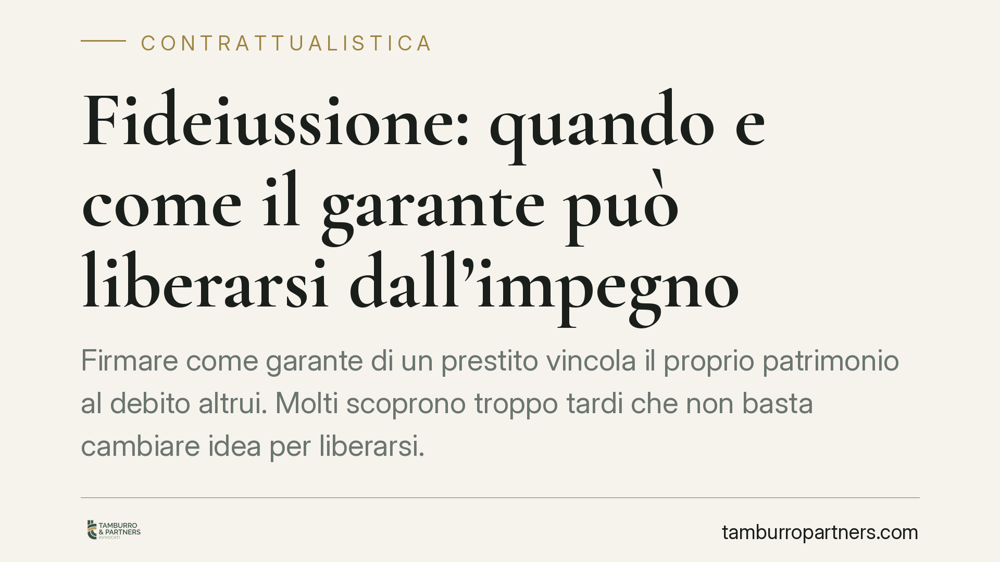

Fideiussione: quando e come il garante può liberarsi dall'impegno
Firmare come garante di un prestito vincola il proprio patrimonio al debito altrui. Molti scoprono troppo tardi che non basta cambiare idea per liberarsi. Il Codice civile prevede però ipotesi precise di estinzione della garanzia. Chiarire i confini di questo impegno è essenziale prima e dopo la firma, perché le conseguenze economiche possono essere rilevanti e durature.

Il punto di partenza: cosa significa firmare come garante
Chi presta una fideiussione si obbliga verso il creditore per un debito altrui. L'art. 1944 cod. civ. stabilisce che il fideiussore è di norma obbligato in solido con il debitore principale: la banca può quindi rivolgersi direttamente al garante per l'intero importo, senza dover prima escutere chi ha ricevuto il prestito, salvo patto contrario (cosiddetto beneficio di escussione).
La domanda ricorrente è semplice: dopo aver firmato, posso ritirarmi? La risposta è che il recesso unilaterale non è ammesso. La fideiussione è un contratto e, una volta perfezionato, vincola. Esistono però meccanismi di legge che possono estinguere o ridurre l'obbligazione del garante.
Inquadramento normativo: le vie di liberazione
Il Codice civile individua alcune situazioni tipiche.
L'art. 1955 cod. civ. prevede la liberazione del fideiussore quando, per fatto del creditore, non può più realizzarsi la surrogazione nei suoi diritti. In pratica: se la banca, con un proprio comportamento, pregiudica la possibilità del garante di rivalersi poi sul debitore principale (ad esempio rinunciando a una garanzia reale), il garante si libera. La giurisprudenza (tra le altre, Trib. Ragusa e Trib. Firenze) ha applicato questo principio in casi di condotta negligente dell'istituto di credito.
L'art. 1956 cod. civ. tutela il garante nelle obbligazioni future: il fideiussore è liberato se il creditore, senza sua autorizzazione, concede credito al debitore pur sapendo che le condizioni patrimoniali di quest'ultimo sono peggiorate. È una norma pensata contro il finanziamento "al buio" a danno del garante.
L'art. 1957 cod. civ. impone al creditore di agire contro il debitore entro sei mesi dalla scadenza dell'obbligazione principale. Se non lo fa e non coltiva l'azione con diligenza, il fideiussore si libera. Numerose pronunce di merito (Trib. S. Maria Capua Vetere, Trib. Catania, Corte d'Appello di Napoli) hanno dichiarato decaduta la garanzia proprio per inosservanza di questo termine.
Infine l'art. 1953 cod. civ. riconosce al fideiussore, prima ancora di pagare, il diritto di agire contro il debitore principale perché lo liberi o presti garanzie, in ipotesi specifiche (ad esempio quando il debitore è divenuto insolvente o l'obbligazione è scaduta).
Implicazioni pratiche per chi ha firmato
La prima conseguenza è che la volontà di "ritirarsi" non produce effetti da sola. Occorre verificare se ricorra una delle ipotesi previste dalla legge.
Molto dipende dal testo del contratto firmato. Le fideiussioni bancarie contengono spesso clausole che derogano agli artt. 1955, 1956 e 1957 cod. civ., riducendo la tutela del garante. Alcune di queste clausole sono state ritenute nulle quando riproducono lo schema uniforme censurato dall'Autorità garante per la concorrenza per intesa anticoncorrenziale: un profilo che va esaminato caso per caso.
È inoltre decisivo il momento in cui il credito è scaduto: il termine di sei mesi dell'art. 1957 cod. civ. può rappresentare una via di uscita concreta se la banca è rimasta inerte.
Chi ha garantito un'obbligazione futura, come un'apertura di credito in conto corrente, deve monitorare l'evoluzione del rapporto: il peggioramento della situazione del debitore può rilevare ai fini dell'art. 1956 cod. civ.
Cosa fare in concreto
- Recupera il contratto di fideiussione e verifica se sono presenti clausole di deroga agli artt. 1955, 1956 e 1957 cod. civ.
- Ricostruisci le scadenze: individua quando è scaduto il debito principale e se la banca ha agito nei sei mesi successivi.
- Conserva ogni comunicazione ricevuta da istituto di credito e debitore, comprese eventuali richieste di pagamento.
- Non ignorare le lettere della banca: il silenzio non estingue l'obbligazione e può pregiudicare le difese.
- Fai valutare la validità delle clausole e la sussistenza di ipotesi di liberazione prima di assumere impegni o di pagare.
Disclaimer
Contributo informativo a cura di Tamburro & Partners - Avv. Giuseppe Tamburro. Non costituisce parere legale.
Ogni contratto ha il suo equilibrio.
Se vuoi una revisione delle clausole o una redazione su misura, scrivi allo studio. Ti rispondiamo entro un giorno lavorativo.